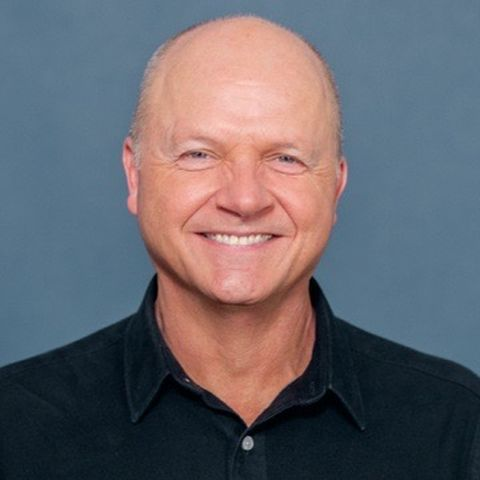
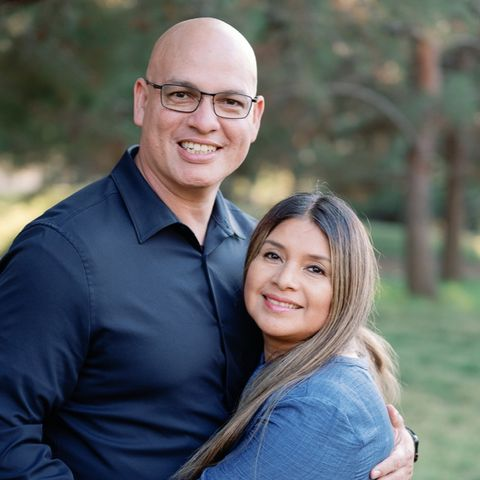
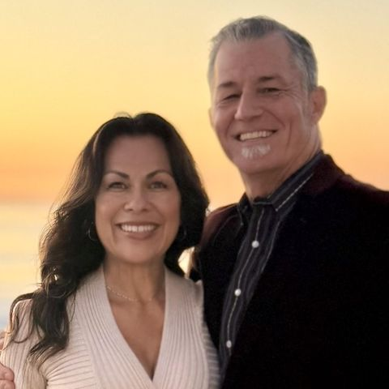
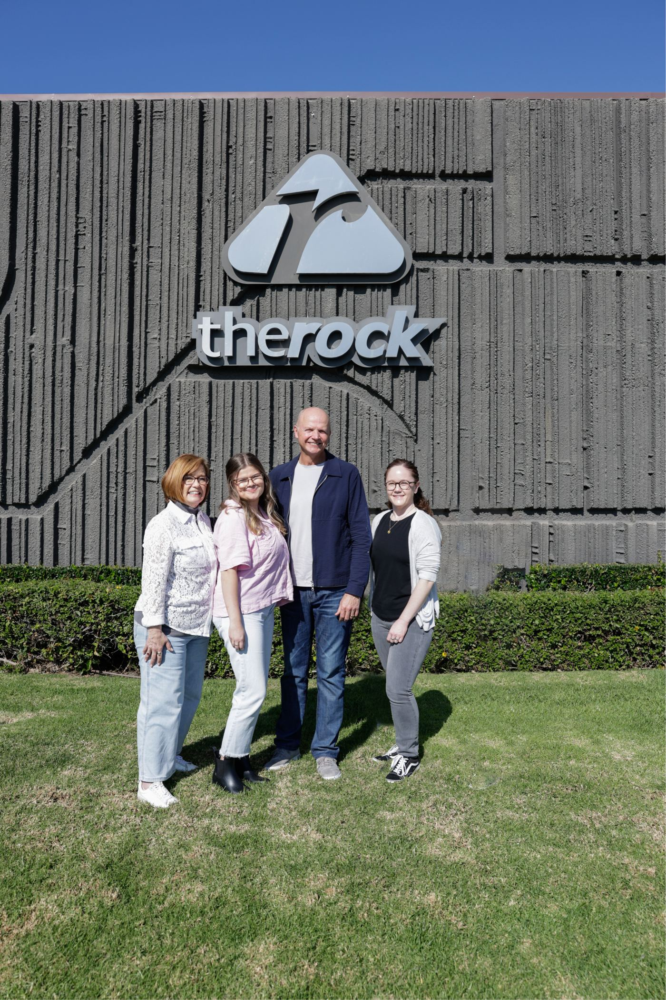

Leadership
The people leading The Rock Network, and the leaders of its church groups.
- Network leaders
- Group leaders
Network leaders

Jerry Dirmann- Kimberly Dirmann
- Jonathan Dirmann
 Carl McAulay
Carl McAulay Corey Theetge
Corey Theetge- Jim Scott

Jose & Isabel O'Neill- Manny & Andrea Orozco
 Tristan Fenholt
Tristan Fenholt
Group leaders
 Alex
Alex Ben Flores
Ben Flores- Brian Palacios
- Christine Chen
- Christy
- David & Paulina Cadena

David & Roxy Helen
Helen Jared
Jared Jeff & Jennifer Little
Jeff & Jennifer Little- Jerry Dirmann
- Jose & Isabel O'Neill
- Manny & Andrea Orozco
- MaryLee
- Michael Gomez
 Michael Jaimes
Michael Jaimes Misti
Misti Nicole
Nicole

Lead a group with us
A church group gathers, grows, gives and goes together, using the Jesus Disciple App.
Start a group